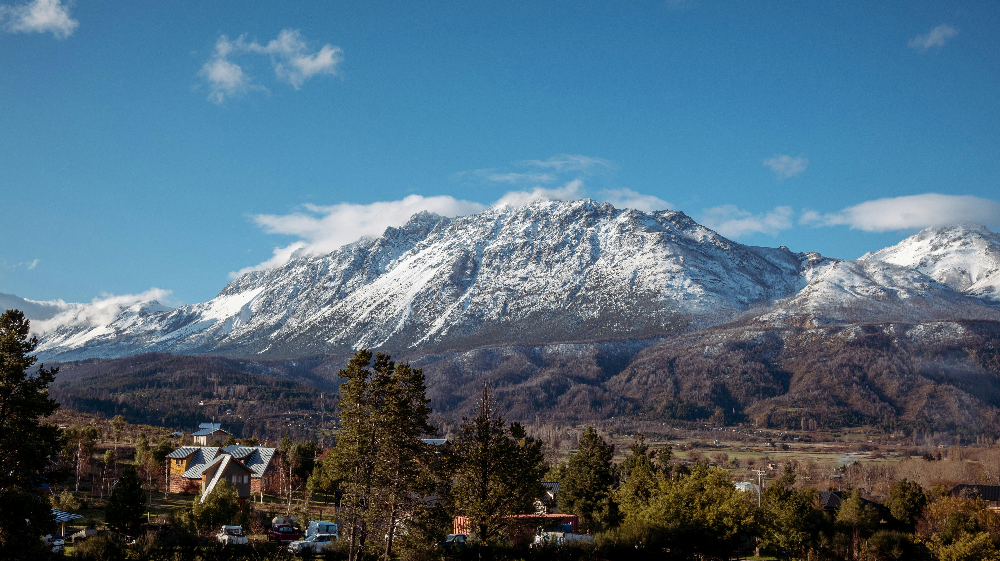

Bariloche
💰 Precio promedio: $150.000 / Temp. Baja
📍 Distancia: 1.600 km
🚗 Auto / Colectivo: ~18 a 22 horas
✈️ En Avión: 2 horas y 20 min
Informacion general de bariloche
San Carlos de Bariloche —conocida por todos simplemente como Bariloche— es uno de esos destinos mágicos que se quedan grabados en la memoria para siempre. Ubicada en la provincia de Río Negro y recostada sobre las orillas del majestuoso Lago Nahuel Huapi, esta ciudad es considerada la capital del turismo de aventura y, por supuesto, la indiscutida Capital Nacional del Chocolate. Caminar por sus calles es sumergirse en una postal perfecta donde la arquitectura alpina, heredada de sus primeros colonos europeos, se fusiona de manera armoniosa con una naturaleza imponente de lagos glaciares, ríos cristalinos y bosques milenarios de coihues y lengas.
Un Destino para las Cuatro Estaciones
Lo fascinante de Bariloche es que cambia de piel según la época del año, ofreciendo una experiencia completamente distinta en cada temporada: